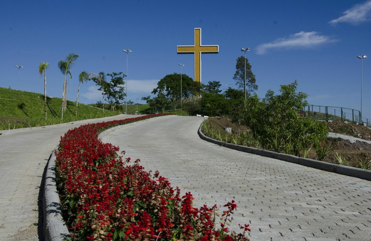
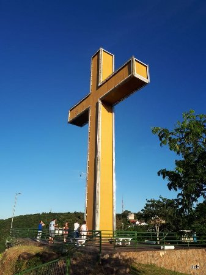

O Parque da Santa Cruz ocupa uma antiga pedreira - recuperada pelo famoso ambientalista José Lutzemberger.Tem cruz de 20 metros de altura, iluminado com néon e que pode ser vislumbrado de qualquer ponto da área urbana.
O parque dispõe de estrutura para receber visitantes, incluindo jardins, estacionamento e segurança. Também possui um anfiteatro ao pé do morro, de onde se vê um paredão de 40 metros de rochas com cerca de 60 milhões de anos. No reveillon teve queima de fogo e 5 mil pessoas


Volte ao início